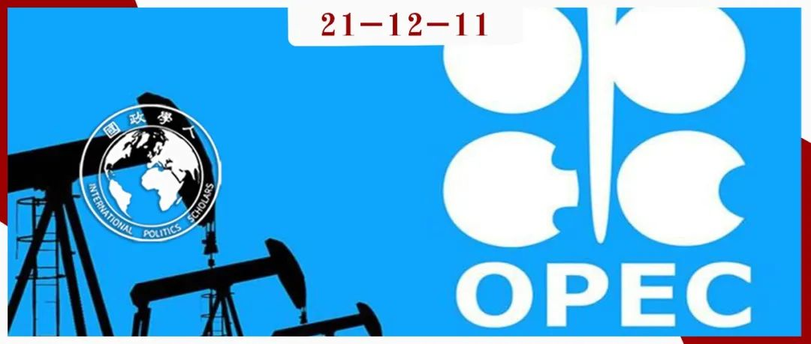

收录于合集 #《国际关系前沿》2021年第12期 22个

作品简介
作者： Jeff D. Colgan, 布朗大学政治学系和沃森公共与国际事务研究所副教授。
编译： 尤力（国政学人编译员，上海外国语大学）
来源： Colgan, J. (2014). The Emperor Has No Clothes: The Limits of OPEC in the Global Oil Market. International Organization , 68(3), 599-632. doi:10.1017/S0020818313000489
归档： 《国际关系前沿》2021年第12期，总第39期。

内容摘要
本文通过四项实证研究，发现石油输出国组织（OPEC，简称“欧佩克”）对其成员国的生产水平几乎没有影响。这一发现引发了一个问题：为什么那么多人将欧佩克视作一个卡特尔，相信欧佩克对世界石油供应具有显著影响。在作者看来，欧佩克作为卡特尔的想法是一个“理性迷思”，而该组织的主要职能，是为其成员国创造政治利益。
文章导读
欧佩克成立于1960年。在成立之初，它的创始人以德克萨斯铁路委员会为榜样，希望它能成为一个卡特尔。而20世纪70年代石油价格的大幅上涨使得学者们开始相信，欧佩克已经成为其创始人所设想的卡特尔。
随着时间的推移，研究者对欧佩克是卡特尔的观点提出了质疑。一些学者发现，在欧佩克成员国中沙特阿拉伯是唯一一个产能过剩的国家，基于此，学者提出了一种“主导生产者”模式，即沙特阿拉伯独自发挥市场力量。其他学者则认为欧佩克对市场的影响很小，油价的波动是其他市场因素的产物。近几年，一些学者注意到欧佩克的有效性受到了一系列限制。
尽管学者们对欧佩克的有效性表示怀疑，但是既有的研究更加侧重衡量一个欧佩克成员国的产量变化与欧佩克其他成员国的产量变化之间的关联程度，这种关联可以用其他方式解释。此外，一个国家的政权类型和投资风险等相关政治变量也没有被纳入分析的模型中。
01
欧佩克是卡特尔？
什么样的证据可以证明欧佩克是一个卡特尔呢？曼昆将卡特尔定义为一组企业（本文中为国家）就生产数量或收费价格达成协议，而且“不仅必须就总生产水平达成一致，还必须就每个成员的生产量达成一致。”这一定义意味着，市场价格和边际生产成本之间的差距本身并不能作为卡特尔的证据。相应地，如果欧佩克是卡特尔，人们应该看到该组织合作限制生产（以推动价格上涨）的迹象，例如：成员国的生产率下降或减速；成员国生产数量等于或低于指定配额的产品；配额的变化导致产量的变化；成员国的平均产量或消耗率低于非成员国。基于此，作者进行了如下四项测试。
第一项测试是该组织对新成员国石油产量的影响。如果欧佩克对石油产量有限制性影响，新成员国的石油产量应该下降或减速。在使用罗斯评估世贸组织成员国贸易水平时使用的方法后，作者发现几乎没有证据表明欧佩克有上述影响。
第二项测试是该组织否存在欺诈行为。一个强卡特尔几乎不会存在欺诈行为，但在欧佩克，欺诈行为很普遍。美国能源信息署的数据表明，在1982年至2009年期间，该组织的生产过剩率高达96%。
第三项测试是该组织的生产率是否受到配额的影响。测试结果表明，该组织配额在解释产量水平变化方面做得很差。
第四项测试是该组织成员国石油产量或消耗率低于其他国家的现象是由什么原因造成的。
作者调查了1980年至2010年30年期间不同国家的石油产量或消耗率，使用1）欧佩克，表明该国在某一年是否为欧佩克成员国；2）世界经济增长，以当年全球GDP的年增长率作为衡量全球石油需求的一个代表；3）财政实力，以人均石油储备的自然对数衡量；4）国家的投资风险，使用风险评分进行衡量；5）国家的政权类型；6）战争，表明一个国家在其领土上进行重大国际战争的国家年份；7）制裁，表明一个国家是否为主要国际制裁目标。另测量生产成本以检测研究结果的稳健性。结果表明，欧佩克成员国石油产量或消耗率低于其他国家的现象是由模型中的其他因素，如财政实力、投资风险等造成的，与其是否为该组织成员国无关。
总之，作者对欧佩克市场影响的四个测试结果均表明：欧佩克并没有像卡特尔那样限制其成员国的石油产量。
02
1973年石油危机与观念的形成
有关欧佩克在某些时期是一个卡特尔的观点仍然存在，1973年石油危机时该组织对世界石油市场产生的重大影响被视为这些观点的有力佐证。但是欧佩克在这场危机中的作用被误解了。
1973年，欧佩克采取了三项行动，导致了油价上涨。首先，该组织成员国大幅提高了石油的“标价”。其次，该组织鼓励了石油行业的国有化浪潮。第三，作为1973年中东战争的一部分，一些欧佩克成员国对美国和其他国家实施了短期禁运。
作者指出，此次事件造成的实际影响相对较小，持续的时间也较短。而且，自1973年以来，国际社会发生了很大变化。石油的“标价”不复存在，大多数主要的石油生产国已经实现了石油的国有化，欧佩克在1973年采取的三项行动中有两项已经无法重复。在今天的石油市场上，只有当时的第三项行动，即禁运，仍然有可能发生。但就影响油价而言，禁运所能造成的影响是三项行动中最小的。此外，石油消费国已经制定了一系列保障措施，以减轻这种禁运的影响。总之，欧佩克不可能再像1973年那样影响石油市场。
03
观念的延续
为了进一步分析欧佩克真正的作用，作者首先将世界分为四个集团。A集团由欧佩克组织内部成员组成，他们有权获得有关该组织行为和影响的信息。B集团包含欧佩克以外的石油市场参与者，他们拥有重要的财务激励和专有数据来源，以了解石油市场。C集团由那些有政治或学术动机去理解欧佩克的角色，包括政府分析师和少数专门分析欧佩克行为和市场影响的学者。D集团是其他所有人：记者、决策者、公众和大多数学者，甚至包括研究石油相关主题（如资源诅咒）的学者。美国总统等高级政治家也可能属于D集团。
这些集团被设计成一个整体，按照每个集团所掌握的信息类型松散地排列。这些行为者的动机、行为和其他可观察到的数据为欧佩克如何持续被视作卡特尔提供了重要信息。
关于欧佩克对世界石油市场的影响力，A集团延续着该组织被视为卡特尔的“理性迷思”。“理性迷思”是一种虚幻或错误的想法，但之所以持续存在，部分原因是一些行为人有保持这种想法的动机。就欧佩克而言，这种动机产生于该组织作为一个强大的卡特尔为其成员国带来的国际声望和政治利益，如国际外交承认等。
B集团的市场参与者虽然在不同程度上理解欧佩克不是卡特尔，但他们并不在意。对于他们而言，欧佩克是否至少有一个成员国拥有市场力量的问题更为重要，因为这意味着欧佩克（作为一个集团，而不是一个组织）的行为会影响市场价格和产量，从而影响B集团参与者的战略。
在C集团，虽然政府有政治动机去理解欧佩克的角色，但由于官僚主义和认知限制，政府情报失误的情况时有发生。与政府分析师类似，学者们也有其学术动机。不幸的是，学者们要消除欧佩克卡特尔地位的神话至少面临两个障碍。首先，学者们获得的数据并不总是好的；其次，对于涉及复杂因果关系以及在实验室条件下无法进行测试的问题，学者们很难达成一致甚至主导的观点。
而对于D集团，欧佩克是否是卡特尔的问题并没有深刻影响其成员的日常生活。由于D集团成员有其他的工作和担忧，他们依靠其他集团（A、B和C）获取信息。
总之，欧佩克成员国为了继续享有该组织作为卡特尔所带来的国际声望和政治利益，选择延续这一“理性迷思”。其他成员倾向于将“欧佩克是卡特尔吗？”与“欧佩克是否至少有一个成员国具有一定的市场影响力？”这两个问题混为一谈。A集团从这种混乱中获益；B集团对纠正这一错误不感兴趣；C集团仍未就这一问题达成一致。因此，大多数人仍然无法正确理解欧佩克。
04
结语
作者指出，应该将欧佩克理解为一个为其成员国带来利益的政治俱乐部。这有助于解释为什么该组织尽管作为卡特尔失败了，但仍然对世界政治产生深刻影响。这也有助于回答该组织成员国变化的问题。同时，将欧佩克视为一个政治俱乐部，也解释了各国如何将该组织的成员资格视为国际地位和威望的信号。
另外，虽然欧佩克并不是一个卡特尔，但该组织会像许多其他国际制度一样，促进国家间的信息共享并降低交易成本。但总体而言，欧佩克的主要目的是政治。
译者评述
本篇文章属于国际组织研究领域，主要的研究问题为石油输出国组织（OPEC）是不是一个卡特尔？如果不是，其作为国际组织的主要职能是什么？基于这一研究问题，作者对欧佩克的角色进行了深入的探讨。在既有的研究中，该组织往往被视为一个经济上的卡特尔。虽然这种观念并非一成不变，但由于种种原因，最终这样的“理性迷思”得到了延续。作者解释了这种观念的产生及延续，并最终得出结论：欧佩克并不是一个卡特尔，该组织的主要职能，是为其成员国创造政治利益。
之所以推荐这篇文章，是因为对欧佩克的研究为理解国际组织是理性设计的产物提供了补充。一方面，这篇文章填补了对于该组织系统研究的空白。另一方面，对于有些组织而言，其原始的职能与最终的职能并不是完美契合的。这些组织在其最终的职能被完全理解之前就已经设计好了，成员国对其职能的理解可能会随着时间的推移而改变。同时，作者在最后为欧佩克的角色提出了创新性的解释，即将其视为一个为成员国带来利益的政治俱乐部。在此基础上，欧佩克的观念、行为就不是在经济卡特尔的背景下产生和发生的，这也为后续学者的研究提供了方向。
这篇文章对我最大的启发主要有两个。第一，某一研究领域普遍的信念也会存在错误的可能性。第二，欧佩克对国际石油市场确有影响，但是石油价格的波动并不是该组织能够主导的，或者说是超出该组织的控制范围的，对于相关领域的政策研究者而言，欧佩克不应在经济上被“神化”，也不应在政治上被“异化”。
词汇整理
理性迷思 rational myth
主导生产者 dominant producer
资源诅咒 resource curse
普通最小二乘法 Ordinary least squares
稳健性检查 robustness check
审校 | 朱忻博 丁伟航
排版 | 顾金源 黄伊蕾
文章观点不代表本平台观点，本平台评译分享的文章均出于专业学习之用, 不以任何盈利为目的，内容主要呈现对原文的介绍，原文内容请通过各高校购买的数据库自行下载。

国政学人
支持学术公益与知识传播
微信扫一扫赞赏作者 __赞赏
已喜欢，对作者说句悄悄话
取消 __
发送给作者
发送
最多40字，当前共字
上一页 1/3 下一页
长按二维码向我转账
支持学术公益与知识传播
受苹果公司新规定影响，微信 iOS 版的赞赏功能被关闭，可通过二维码转账支持公众号。